A design system from scratch.
A design system built from nothing, around a small to-do game: what it has to include, what each colour means, what Claude did that I changed, and how an audit keeps it right.
- Type styles
Before: 26Now: 7size and weight combinations in use, cut to one scale. - Age states
Before: 5Now: 3Shiny, fresh, rotten: new, normal, overdue. The character carries the age. - Finding
Assumed: One palette is enoughFound: One job eachPeach sat on a counter, two buttons and a tile. Butter on a tab, a toast and a note. I could not tell state from control.
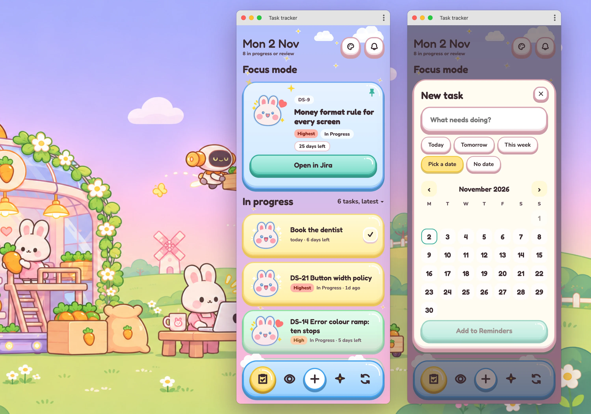
A system with nothing inherited
Most design systems are inherited: a brand, old screens, other people's components. This one started from zero, around a small app with one user: a to-do game over the lists in Apple Reminders and Jira, where every task is a card that ages, with a rabbit whose face changes with it. That makes it a clean case for what a system needs, and what it does not.
The words I use below. Each task is a card in its age colour, with a rabbit poking over the edge. The age has three states: shiny when the task is new or was updated this week, fresh in between, rotten when it is past its due date or has sat for 90 days. The card goes yellow, green or pink with it, and the rabbit's face goes excited, happy or dizzy. The task I choose to focus on is pinned to the top, with a swipe to the left, as a big blue card under a Focus mode heading. A bell holds new tickets. Pick an easy one, in the nav, asks Claude for the smallest task on the list. Pastel sky and Dusk are the two background themes, switched by the palette button.
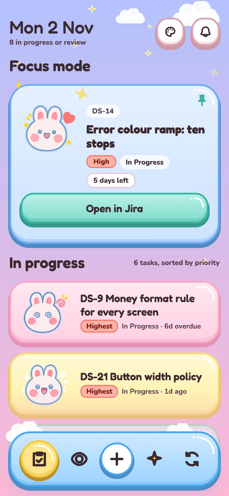
123456- A card. Yellow, green or pink says shiny, fresh or rotten, and the rabbit's face says it again.
- Focus mode: the pinned card. The one task I chose to finish, raised to the top in blue.
- The palette button. It switches the background between Pastel sky and Dusk.
- The bell. New tickets, with who made them and when.
- Pick an easy one, the sparkle in the nav. Claude chooses the smallest task and writes the first step.
- The nav: tasks, review, add, easy one, refresh. Butter marks the active tab.
Claude drew the first screens in Figma from my references, fast, and every one looked finished. When the date picker came out the wrong size, nothing could be fixed in one place, because no value was a variable. That was the first of many things I had to catch, and the next section lists them all. None of it is a complaint about the tool. A screenshot can pass a glance and still break a rule, and the rule has to come from me. So I stopped drawing screens and built the system.
Four rules the system had to meet
- One job each. If a colour sits on two things that mean different things, one of them changes.
- Small enough to remember. If I cannot say what a colour is for, it goes.
- Nothing on a screen that is not in the scheme. A new colour goes into the scheme first, then onto a screen.
- Every element gives me something to act on. The header shows the date and the open count, not a brand. Clouds and stars stay on the background, where they cover nothing.
What Claude did, and what I changed instead
This is why you need to know your craft. Claude did the work and presented each step as done. I did not always agree, and nothing told me when to look: I found each of these by using the app and reading the file. Claude makes the work faster. It does not make it right, and it does not replace the person who knows what right looks like.
| What Claude did | Why I did not agree | What I changed instead |
|---|---|---|
| The Jira link in red | Red had three jobs: warning, link and highest priority. And the warning red itself was a dull coral that did not read as one next to the pastels. | Red for warnings only, made vivid enough to read as a warning. Every button is mint. |
| One colour on a state, a surface and a control | Peach on the Waiting counter, two small buttons and the tiles. Butter on the selected tab, a toast and the note cards. Mint on the buttons and a counter. A number that looks like a button invites a tap. | One job per colour. Counters, toasts and notes went neutral. Butter means selected and nothing else. |
| Colours outside the scheme it had just built | A pinned card in a blue that matched nothing and a rotten tile in a pink that was in no swatch. When I asked what else broke the rule, it listed nine more. It had not checked its own screens against its own scheme. | Each got its own entry or was changed. The pink stayed, as an age colour, not a warning. |
| A colour scheme that was a list of hues | Pink, butter, peach, blue, a red, in the order they were made. No line on where each may appear, so nothing stopped pink being a button and a tile at once. | Grouped by job, three stops each, one line on where it may appear, in an even grid. The before and after is in the Colour section below. |
| Two sets of buttons, in two colours for the same job | When I asked for the red button fixed, Claude drew a second Buttons section beside the first instead of changing it, with mint and blue variants for the same action. It did not spot the duplicate. I did. | One Button family, one colour. The blue variants were deleted. |
| Two of other things as well | A second colour scheme, an Extras row repeated on the flow board, and loose copies of components sitting beside the components. A system with two of anything is two systems. | One scheme bound to the variables, one UI board, and the loose copies replaced by instances. |
| A Task row component with two Rotten variants and no Shiny | The Shiny variant was named Rotten and carried the rotten carrot on the butter tile, so the state and the picture disagreed. The priority field opened a picker of components instead of a dropdown. Claude had just reported 55 rows swapped to this component. I found it by opening one. Elsewhere a wrapper frame carried the same name as its component, and variant sets rebuilt with combine-as-variants came out with corrupted names. | The variant renamed and rebuilt, priority as a plain dropdown, and every row on the screens checked afterwards: 51, none changed. Rule: one name per thing, and a new variant is cloned inside the set and renamed. |
| Text fixed inside each variant, with a real task as the library sample | A component whose text cannot change is a picture, and a real ticket sitting in a library is a leak waiting to happen. Three states of the Task row all showed the same ticket. | Every text is a field. The library shows placeholders: Task title, Status · date, Button label, 00. Each instance carries its own words. |
| Type styles named by where they were first used | Number, Card title, Meta. A style outlives the card it was drawn for, and a name tied to a place misleads the next person. | Named by role and size: Display, Headline, Title, Body, Label, in Small, Medium or Large. The table is below. |
| A mock browser window treated as part of the design | It was recoloured and audited like a screen. A note is not the system. | Marked as a note and left out of the audit. |
| Typography, spacing and layout as loose frames | Each in a different style, with elements in the order they were built. A board nobody can scan is not a reference. | Every section the same look. Elements grouped by likeness, small to large, so labels sit with labels and cards at the bottom. |
| Reported screens as done without looking at them | More than once the reply said so in passing: "I never looked at them." A report is not a check. | I look at every screen myself, and a script checks the app's contrast across seven states. |
| Put a different character in when an upload failed, and left stray nodes after a failed script | A silent substitute is worse than an error, because nothing flags it. | The right character uploaded again and the stray nodes removed. I read the board after every script run. |
| Let the app drift from the file | A 112px carrot where the file said 150, extra space under a button, an emoji pin where the file had a vector, the bell icon inside the theme button. The file is the source, and the app follows it value for value. | Each one matched to the file. |
| Built the variables, then left 30 colours outside them | The same with text: 33 texts with no style and 5 under 12px, most on the flow board's own scaffolding. A system half applied is a list of intentions. | All bound and styled by script, and an audit section in the file so the next miss shows up as a number. |
| Clipped the hard shadows on 1,082 frames, and dropped gradient stops | The lip is what makes a box read as a box, and the clip cut it off. A lost stop makes a gradient flat. | Clipping turned off by script on 1,082 frames, then 382 more, and the stops put back. The crop audit now finds 0 cut-off children. |
The seven type styles, renamed
Each of these was caught by looking, not by asking the tool whether it was done. The speed was real: seven versions of Home in a day, 572 texts restyled in one pass, a contrast check across seven states in a minute. The judgement was not in the tool.
What I made, and what it covers
The system as it stands: what it holds, in numbers, then the nine parts and the rule each one exists to enforce. What it leaves out is in Decisions.
- Tokens
- Colour variables grouped by job, with Pastel sky and Dusk as two modes. Space in six steps from 4 to 28px. Radius in six steps from 12 to 44px.
- Type
- Seven styles, 34 to 12px, named by role and size. Nothing under 12px.
- Icons
- One set of 16, the same 2.4px line and round ends, swappable inside the components that hold them.
- Components
- About 20 sets with fields and states: button, icon button, nav item, task row, header, chips, input, day cell, toast, and the one-off cards.
- Characters
- One rabbit with three faces for the cards, and ten poses for the empty states and the easy-win card.
- Screens
- Eight flow screens at phone height, with notes beside them, plus offline, error and loading states.
- Audit
- An audit section in the file, and a script that checks every line of text in the app across seven states.
- App
- One HTML file and a small server, matched to the file value for value, installed in my Dock.
Nine parts, each with a rule
What the file holds now, and the one-line rule each part exists to enforce. Every part came from a mistake above.
| Part | What is in it | Rule |
|---|---|---|
| Colour | The scheme grouped by job: surface, text, background, action, selected, navigation, warning, success, the pinned and easy-win cards, the rabbit and stars, and the three ages. Each box colour is one hue in up to five stops: top and base for the fill, a shade, an outline and a lip. | One job per colour. Tints of one hue, no ramps. |
| Type | Seven styles: 34, 30, 26, 18, 14 and two at 12, named by role. | Every text on a style. Nothing under 12px. |
| Space and radius | Spacing from 4 to 28px and corner radius from 12 to 44px, as variables. | No loose numbers in a frame. |
| Components | Everything used more than once, with fields for its text and variants for its states. Then the one-off cards too, so the board shows everything the app has. | Nothing on a screen is a loose copy. |
| Icons | One set of 16, the same 2.4px line and round ends, swappable inside the components that hold them. | No pasted vectors. |
| Modes | Pastel sky and Dusk as two modes on the same variables. | A theme is a mode, not a second palette. |
| States | Offline, error, loading and focus. The offline and error screens show the rabbit, one line and a Try again. | A state is a screen, not a note. |
| Audit | A section in the file: every text colour on its background, Pass or Fail with the ratio. A script that does the same on the app. | Checked by script, not by eye. |
| Rules | Written on the board: phone width, screen padding, spacing, card padding and radius, buttons, overlay, nav, colour roles. | If it is not written down, it is not a rule. |
- 1ReferencesMy two images, five kawaii screens, Mobbin.
- 2CharactersThe rabbit: three faces and ten poses.
- 3ColourThe scheme, bound to the variables.
- 4TypographySeven styles.
- 5Spacing and radius4 to 28px, 12 to 44px.
- 6Layout and paddingPhone width, gutters, card padding, nav.
- 7UI elementsEvery component, with fields and states.
- 8Flow v2Eight screens, phone height, notes beside them.
- 9AuditEvery text colour on its background, with the ratio.
- ArchiveSeven old Home versions and Flow v1, kept apart.
The app, matched to the file. Made-up tasks, real colours.
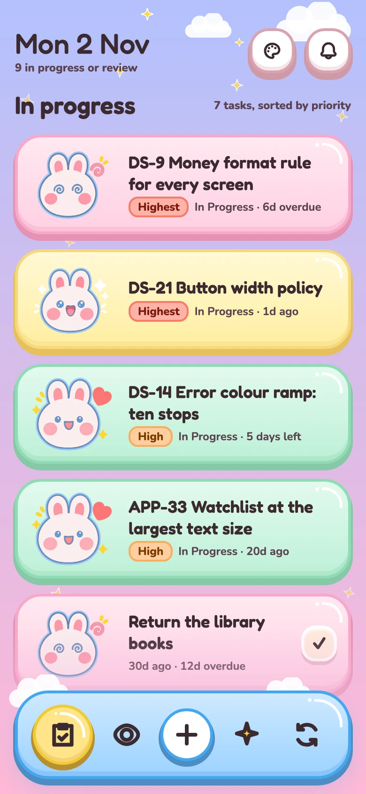
Home. A yellow, green or pink card for shiny, fresh or rotten, and the rabbit's face to match. Butter on the active tab only.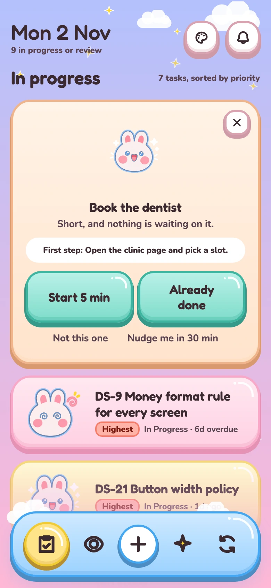
Easy win. Mint on the two ways to finish, plain text for the two ways out.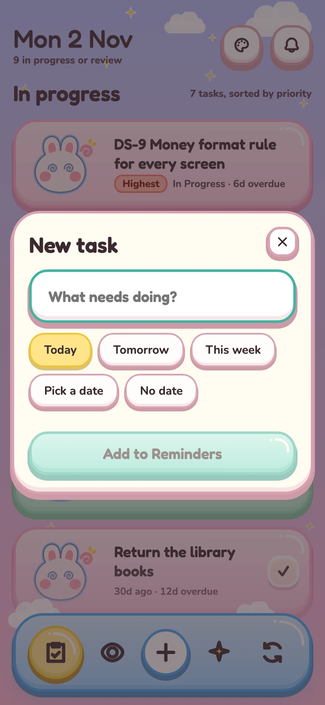
Add. Butter on the chosen date only.What each colour means
At first it was just colours. Then I asked for them arranged by function. Each colour is now one hue in the stops its box needs, a top and a base for the fill, then a shade, an outline and a lip of the same hue, with one line on where it may appear.
What Claude handed over. Named by hue, in the order they were made, with no line on where each may appear. Pink was the button and a tile, blue was a link and a card.
- SurfaceSheets, fields and chips. Cream with a rose shade, outline and lip.
- ActionEvery button, including the link to Jira.
- SelectedThe active tab and the chosen date. The shiny card has its own yellow, so butter means one thing.
- Navigation and linksThe nav bar only. Buttons are always mint.
- Pinned cardThe one big card on top. Light blue so it stands out, with the blue edge.
- WarningOverdue and the high priorities. Never a button or link.
- ShinyA card made or updated this week.
- FreshA normal card.
- RottenA card 7 days overdue or 90 days idle. An age, not a warning.
| State | How it shows | Never with |
|---|---|---|
| Age | The card itself, yellow, green or pink, and the rabbit's face: excited with sparkles, happy, or dizzy with swirl eyes. | A control. No button, chip or tab wears an age colour, and the shiny card has its own yellow, apart from the selected butter. |
| Priority | A chip that runs cool to warm: blue for lowest and low, butter for medium, orange for high, a red tint for highest. | Date labels. They are neutral, so a date and a priority can never be read as the same thing. |
| Overdue | In words on the card's date line, and as a salmon date chip on the pinned card. | Buttons or links. Red is never something to tap. |
| Selected | Butter on the active tab and the chosen date. | Toasts, notes and the shiny card. The shiny card got its own warmer yellow so butter means one thing. |
| Action | Mint on every button, including the link to Jira. | A card or a chip. Only things you can tap are mint. |
| Navigation | The blue nav bar, and a lighter blue on the pinned card so it stands apart from the list. | Buttons. The blue button variants were deleted. |
How the tokens are named
Two layers. The lower layer is the primitives, and only there does a name say a hue: a family and a step, Blue/150, Ink/250, Peach/100. The upper layer is the one the components point at, and a name there says the property and the role: Text/primary, Surface/outline, Action/base, Background/top. No hue, no scenario and no component name, so a token outlives the screen it was first drawn for, the same rule the type styles follow. A theme lives in that upper layer too: Background/top points at Violet/050 in Pastel sky and at Violet/100 in Dusk, and that is the whole difference between the two.
It was not built that way. Claude named the first tokens for where they sat, a nav blue, a pinned-card blue, a low-priority blue, and when I asked for the duplicates merged it merged by value, so the hue came back as the name: Blue/top, Red/base. One edit to Blue/top then moved the nav bar, the pinned card and the low chip together, which nobody wanted. The rule I took from it: share a token inside one role, so overdue, blocked and the error toast all use Error/fill, and split it where two things should be free to change on their own, so the priority chips have fills of their own. Two layers rather than three. A component layer, Button/fill and Chip/text, would have doubled the tokens for an app with one button colour.
- Yellow/050#FFF9D6
- Card/shiny-topThe top of the shiny card's fill.
- Yellow/100#FFF0A8
- Card/shiny-baseThe base of the shiny card's fill.
- Priority/medium-fillThe Medium chip. Same step, its own token, so the chip can change without the card.
- Yellow/150#FFE48A
- Selected/baseThe active tab and the chosen date.
- Yellow/200#F6D77A
- Card/shiny-lineThe shiny card's outline.
- Yellow/250#FFD62E
- Decoration/starThe sparkle stars.
Components with fields
Nothing on a screen is a loose copy. Each component has fields for its text and variants for its states, so a change in the library reaches every screen, and a screen never needs a detached frame to say something different. In the library the fields hold placeholders, so no real task ever sits there. The Task row is the one used most: 51 instances across the flow.
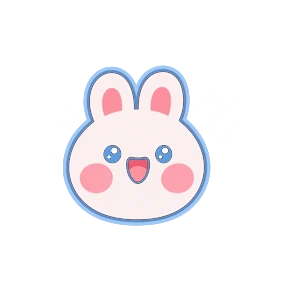
Task titleState: Shiny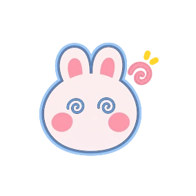
Task titleState: Rotten- State
- Shiny, Fresh, Rotten, Done. Sets the card colour and the rabbit's face. Done mutes the card and strikes the title through.
- Title
- Text. Wraps to three lines, then an ellipsis.
- Meta
- Text. One line: the status and the date.
- Show priority
- On when the task has a priority.
- Priority
- Lowest, Low, Medium, High, Highest, set on the label inside the row. A dropdown, not a component picker.
One component, documented: the Task row
Written the way Material Design documents a component, so the next person can see what is fixed, what is a field and what is a rule without opening the layers.
- 1RabbitThe state's face, 128 by 124 over a 96 by 80 slot, so it pokes past the card. The card never clips.
- 2TitleField. Title/Medium in Text/primary. Wraps to three lines, then an ellipsis.
- 3Priority labelAn instance of the Priority label component. Its level is set on the label; Show priority hides it.
- 4Meta lineField. Body/Small in Text/secondary: the status, a dot, and the date as Nd ago, Nd overdue or N days left.
- 5Card body358 wide, height hugs. A two-stop fill of the state's family, Card/fresh-top to Card/fresh-base here, a 3px outline in Card/fresh-line, a 5px lip below and a 5px highlight inside. Radius 28, padding 10, 12, 10, 10, gap 12.
- 6GlossA 3px curve and a dot in Surface/white at the top right. Decoration only.
| State | When | Fill, outline and face |
|---|---|---|
| Shiny | Made or updated this week. | Card/shiny-top to Card/shiny-base, outline Card/shiny-line. Excited, with sparkles. |
| Fresh | Everything else. | Card/fresh-top to Card/fresh-base, outline Card/fresh-line. Happy. |
| Rotten | 7 days overdue or 90 days idle. | Card/rotten-top to Card/rotten-base, outline Card/rotten-line. Dizzy, with swirl eyes. |
| Done | Ticked off in Reminders. | Surface/cream to Surface/warm, outline Surface/shade. The title struck through in Text/secondary, and the happy face. |
- Fields
- Title (text), Meta (text), Show priority (on or off), State (Shiny, Fresh, Rotten, Done). The priority level is set on the label inside.
- Behaviour
- The whole card opens the ticket. Swipe left pins it to Focus mode. With a pointer, hover lifts it 2px.
- Do
- Set the state with the variant. Put a long title in the field and let it truncate. Hide the label with Show priority.
- Don't
- Detach a row to recolour it. Grow the card for a long title. Delete the label from an instance. Turn clipping on. Type a real task into the library: the defaults are Task title and Status · date.
- Checked
- Both texts clear 4.5:1 on all four fills, 6.5 at the lowest, and nothing on the card is under 12px.
| Component | Fields | States |
|---|---|---|
| Button 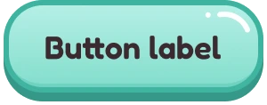 | Label. A leading icon toggle, with the icon as a swap. | Default, hover, pressed, disabled, focus. Large and small. One colour. |
| Icon button | The icon, as a swap. | Close and pin. |
| Header | Date, summary, badge count, show badge. | With the theme button. |
| Input field 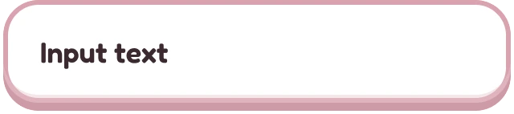 | Value. | Default, focus, error, empty, disabled. |
| Day cell | Day. | Default, today, selected, past. |
| Toast | Message. | Info, success, error. |
| Info chip | Key. | To do, in progress, in review, done, blocked, key. |
| Notification row 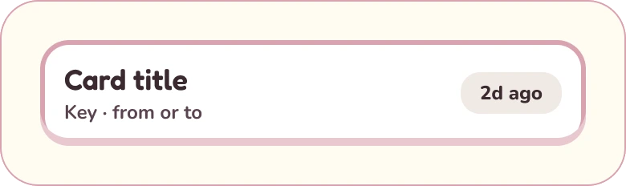 | Title, meta. | Date type: new, old, due, overdue. |
| Labels and chips 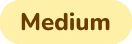 | Set by the variant, since each needs its own text. | Priority label, five. Date label, four. Due chip. |
| Cards 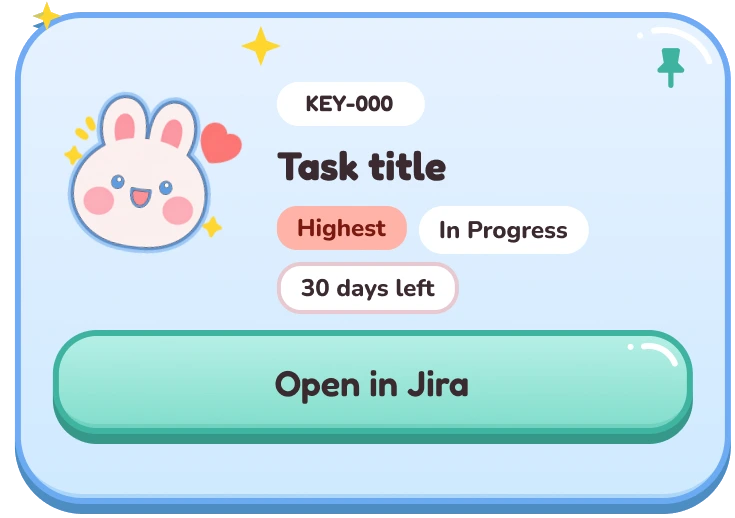 | Title and body text on each. | Pinned, easy win, add task, new cards. One-offs, but components after I asked, so the board shows everything the app has. |
What I chose, and what I gave up
Chose. Minimal and actionable. Home shows the date, the open count, a pinned card and the tasks. New tickets sit in the bell as a badge, not on the page. Each card shows the rabbit, a title of at most three lines, a priority chip and one date line. One hue per job with its own outline and lip, not ramps. Five layers on every box, highlight, fill, shade, outline and lip, in tints of the box's own colour, so the panels read as soft objects without a new hue. A theme as a variable mode, so Pastel sky and Dusk share every other colour.
Kept out. Full ramps. Dark mode. A streak-first home. Any check that ran on its own. A nudge line, and in the end the counters above the list.
Gave up. Five age states and their characters. Blue buttons. Rotten as the warning red: I liked the pink, so it became an age colour with its own entry. The food characters, for one rabbit whose face carries the age. Meadow, because its green hid the fresh cards.
How the contrast audit runs
A script, not my eye, because the backgrounds are gradients and an overlay sits on top of some screens.
Find the text and read its colour.
Turn it transparent and photograph the box behind it.
Measure the ratio against those pixels. 4.5:1 for text, 3:1 for large text.
It opens the app in seven states: Home in both themes, pinned, the add and bell overlays, offline and error. It walks every piece of visible text, skips decoration and anything hidden under an overlay, turns the text transparent for a moment, photographs the box behind it, and measures the ratio between the text colour and the real pixels. Text needs 4.5:1, large text 3:1. It prints every fail with the element, the size and the ratio.
Result: 58 lines checked across the seven states, 0 fails. The secondary text colour is the one that moves. It sat just under on the pink bottom of the first gradient, and again on the new backgrounds after the restyle, and each time the script said so before I did. The last fix went the other way: the Dusk top stop was lightened so the summary line passes there. Button edges against the background are under 3:1 and I left them, because every button also has a text label. The Figma file holds the same audit as a section: compact tiles, each text colour on its background with Pass or Fail and the ratio under it, no long rows.
A second pass audited the file itself. It found 30 colours outside the variables, 5 texts at 11px and 33 texts with no style, most of them on the flow board's own scaffolding, a mock browser window and the captions under the app icon. About 140 strokes, fills and shadows were bound to variables and all 572 texts put on one of six styles. A crop audit turned clipping off on 1,082 inner frames that were cutting off the hard shadows, then 382 more, and now finds 0 cut-off children.
What I assumed, and what held
Colour can carry five ages.
Too many to remember. Three states, and the character does the work.
Claude can finish the screens on its own.
It drew the red link, one colour on three jobs and five age tints, then a second set of buttons in two colours, and called each one done. Knowing the craft is what caught them.
One job per colour holds.
No element shares a colour with something it is not, and every pair passes.
The app runs every day with real tickets. The rules held at this scale and they hold at product scale: red for warnings, one job per colour, and a palette small enough to say out loud.
What I'd change, and the rule I took
On working with Claude. It did the volume: the drawing, the binding, the restyling, the audits. I did the judgement: which colour means what, which element earns its place, which screenshot is wrong. That split only works if I know the craft well enough to see the mistake in a finished-looking screen. AI makes me faster. It does not make the check optional.
I built fast and tidied after. The variables, the type scale and the audit came on the second day, after seven versions of Home, so until then every recheck meant hunting values by hand. Next time the colour scheme and the audit come before the second screen, even for one user. Nine mismatches sat there until I asked.
The rule I took: if I cannot say what a colour is for, it is not in the system. Nothing goes on a screen that is not in the scheme.